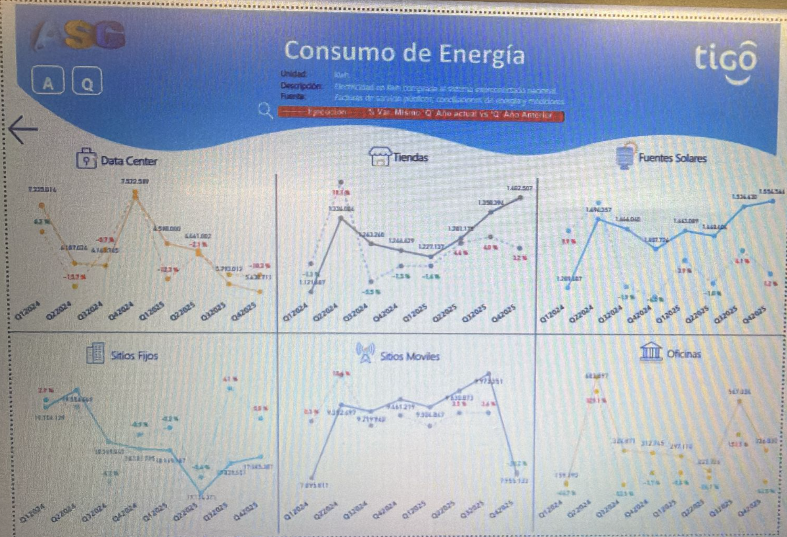
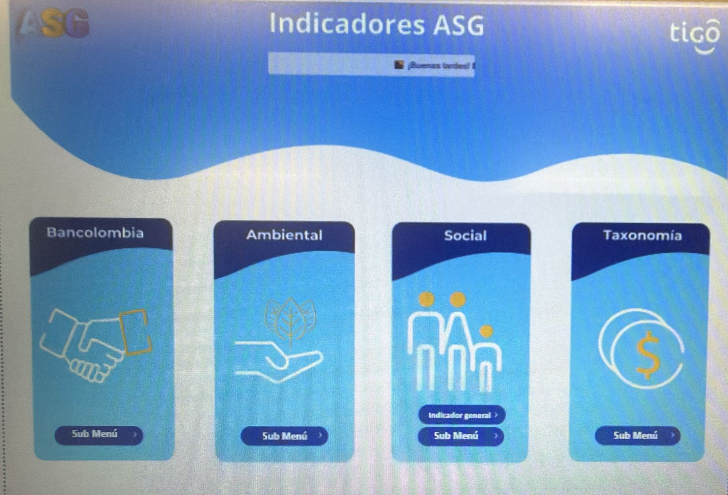

Proyectos Realizados
Soluciones de datos que generan impacto real en los negocios

Dashboard de Facturación – Power BI
Dashboard ejecutivo desarrollado en Power BI para el análisis y seguimiento de facturación médica. Incluye KPIs del valor facturado por entidad, comparativo anual 2025–2026, cálculo del IBC mensual y filtros dinámicos por tipo, año y fecha de corte para la toma de decisiones en tiempo real.

Dashboard Consumo de Energía – TIGO
Dashboard de análisis energético desarrollado en Power BI para TIGO. Muestra el consumo por Data Center, Tiendas, Fuentes Solares, Sitios Fijos, Sitios Móviles y Oficinas, con comparativo trimestral y seguimiento de variaciones porcentuales para la toma de decisiones.

Menú Funcional Indicadores ASG – TIGO
Menú de navegación completamente funcional construido dentro de Power BI para el reporte de Indicadores ASG (Ambiental, Social y de Gobernanza) de TIGO. Permite navegar entre los módulos Bancolombia, Ambiental, Social y Taxonomía desde una interfaz visual e interactiva diseñada en Power BI.